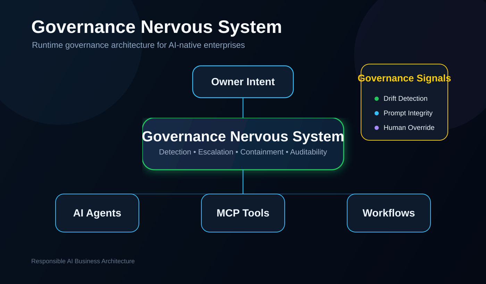
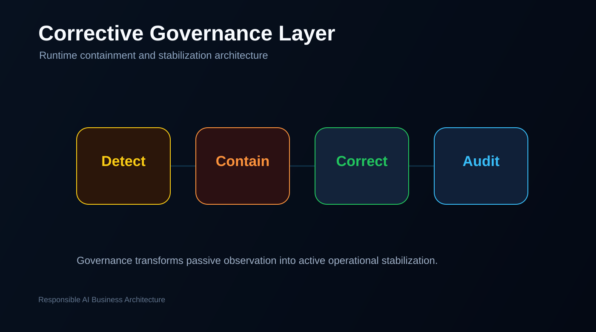
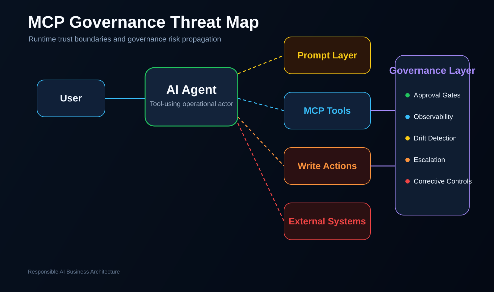
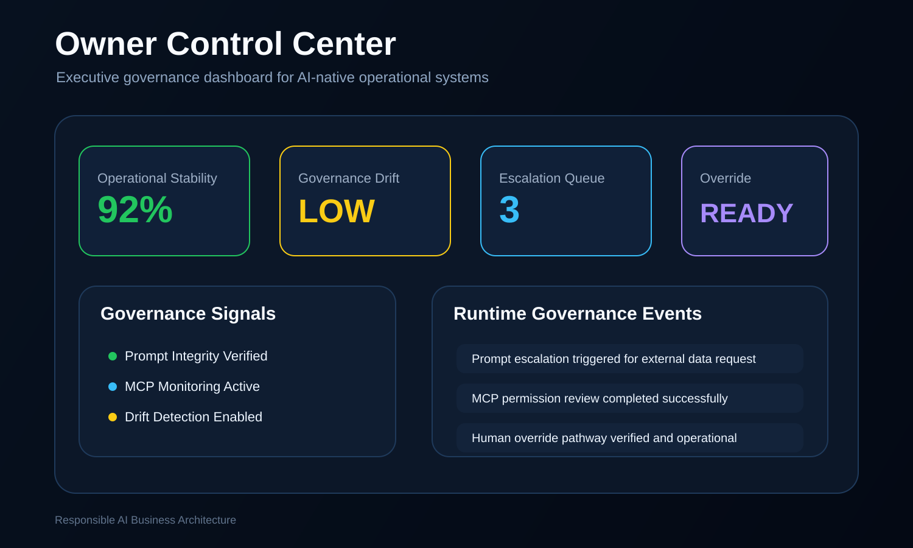
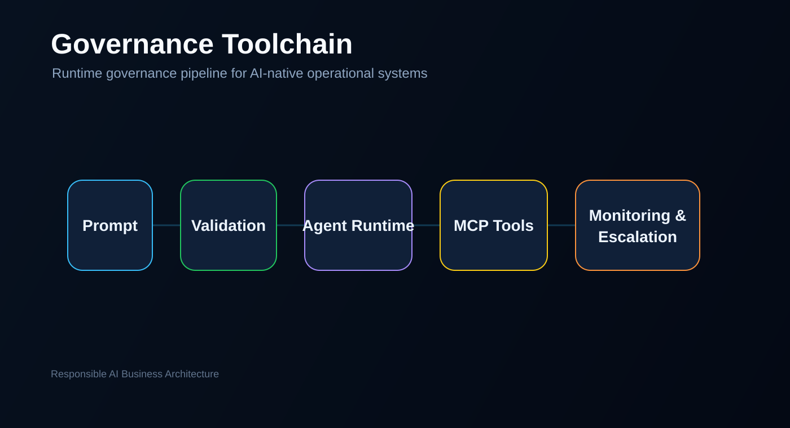
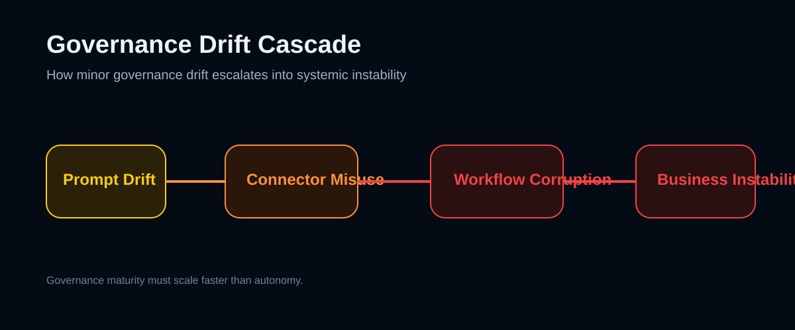

Governance Nervous System
A sensory and corrective governance layer for AI-native operations.

A deployment-level governance architecture for AI agents, MCP/connectors and autonomous workflows — focused on operational controllability, observability and human accountability.
The project reframes AI governance from static policy into operational architecture.
A sensory and corrective governance layer for AI-native operations.

Operational containment: detect, contain, correct and preserve auditability.

MCP/connectors transform AI systems from assistants into operational actors. Trust does not eliminate runtime governance risk.

Evaluate whether an organization is ready for AI agents, MCP/connectors and autonomous workflows.
Runtime observability, audit coverage and escalation telemetry.
Read/write separation, permission mapping and trust-boundary review.
Stop-switch, rollback, containment and human override readiness.
Executive dashboard model for AI governance telemetry.

Runtime governance pipeline from prompt to escalation.

How small governance drift becomes systemic operational instability.

AI integration is not a plugin installation. It is a socio-technical architecture change.